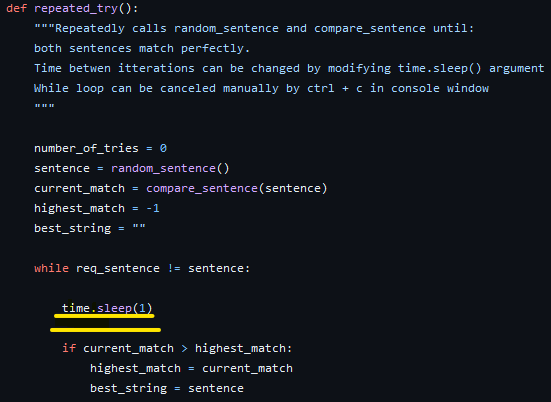

This program asks the user for a sentence, then tries to guess the sentence by matching the caracters one by one. The time interval in which the guesses are made can be changed inside the repeated_try() function by modifying the argument of time.sleep().

Important! The program can be stopped by pressing ctrl + c in the console window.